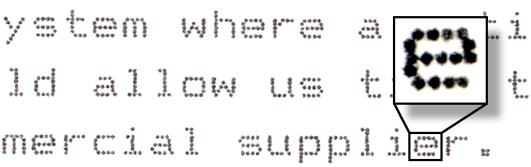
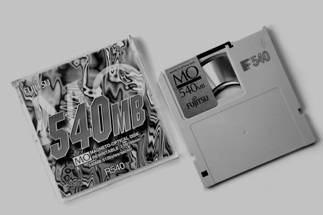
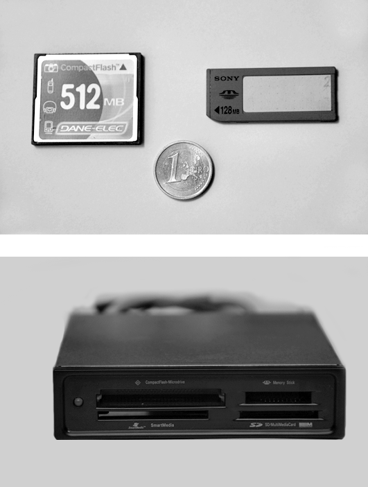
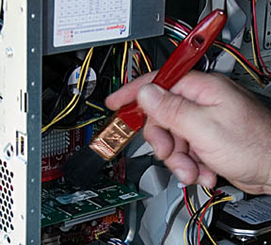

Manteniment de perifèrics
Tot i que els perifèrics són una de les fonts de problemes més gran en un sistema informàtic, l’usuari espera que tant els perifèrics fonamentals de l’equip –teclat, monitor i ratolí– com els que són complementaris –la impressora o l’escàner, per exemple– funcionin correctament.
Aconseguir que tots aquests dispositius complementaris funcionin correctament la major part del temps comporta una sèrie de procediments previs a la utilització del perifèric (instal·lació i configuració) i uns altres que es donen al llarg de la seva vida útil (manteniment).
Un bon manteniment...
…d’un equip informàtic estàndard requereix conèixer a fons la varietat de tipus de perifèrics com també les connexions i el cablejat corresponents.
El manteniment pot ser preventiu, quan es basa en un bon ús i configuració dels dispositius, o pot ser també simptomàtic, quan tracta de solucionar problemes puntuals que s’han produït amb un component o perifèric, tant si es tracta de l’empitjorament del rendiment com d’una avaria pròpiament dita.
Per dur a terme un manteniment adequat dels dispositius cal conèixer-ne la classificació i les característiques tècniques bàsiques que els defineixen. També cal aprofundir en el procés d’instal·lació d’aquests dispositius en equips Windows i GNU/Linux, com també en el procés de manteniment que cal seguir per assegurar-ne un funcionament adequat.
Consulteu els processos del manteniment simptomàtic o de resolució d’avaries en equips PC en l’apartat “Detecció d’avaries” d’aquesta unitat formativa.
A continuació podeu trobar una breu descripció dels perifèrics més importants i les seves característiques tècniques.
Perifèrics d'un ordinador
Per fer la seva tasca, la unitat central de processament ha de tenir accés, en primer lloc, a les dades que utilitzarà i, després, ha de poder dipositar la informació que generarà en algun lloc en què la pugui reutilitzar. Per tant, caldrà que disposi d’unitats d’entrada-sortida que la comuniquin amb l’exterior, i els dispositius que es connecten a aquests canals de comunicació són els perifèrics.
Els perifèrics són elements que serveixen perquè la màquina interaccioni amb l’entorn. Com el nom indica, normalment estan situats al voltant de l’ordinador i el connecten amb l’exterior.
Un connector elèctric...
és un dispositiu conductor capaç de mantenir units dos dispositius elèctrics. La connexió pot ser temporal o requerir eines per a l’assemblatge. En informàtica els connectors també reben el nom d’interfícies físiques.
Així, doncs,la finalitat de la majoria dels perifèrics és la interacció de l’ordinador amb les persones, tant pel que fa a l’entrada com a la sortida de dades, i per això tots els perifèrics –tant els interns com els externs– són dispositius que es comuniquen amb els components fonamentals –processador, placa base i memòria interna– mitjançant diversos tipus de connectors d’ampliació.
Pantalles o monitors
Les pantalles són un dels perifèrics principals de sortida dels ordinadors. Ens permeten visualitzar tant l’entrada de les dades introduïdes per l’operador (usuari) com la informació de retorn del procés que s’executa.
Els terminals
Són perifèrics per a la interacció entre les persones i l’ordinador, tant en l’entrada de dades com en la sortida d’informació. Van substituir els terminals teletip.
Les pantalles han evolucionat força. Des dels “primitius” monitors de tub de rajos catòdics (TRC o CRT) monocroms de fòsfor verd, que només presentaven informació textual, fins a les pantalles actuals, que permeten la representació d’imatges en color i alta definició, hi ha hagut un avenç significatiu.
- Pantalla TRC o CRT (de l'anglèscathode ray tube)
El tub de rajos catòdics
Fins fa ben poc, el tub de rajos catòdics era l’únic sistema de presentació d’imatges. Realment, el TRC és una vàlvula electrònica en què l’ànode està recobert internament d’un compost capaç d’emetre llum quan hi incideix un raig d’electrons anomenat pinzell electrònic procedent del càtode (d’aquí, la denominació de rajos catòdics). Tant la intensitat com el gruix d’aquest raig estan controlats electrònicament, i fa que incideixi en un petit punt a la pantalla. Si es controla la seva posició amb un camp magnètic produït per unes bobines externes, es pot fer incidir el raig d’electrons en qualsevol punt de la pantalla i il·luminar-la en tots els punts. Si la intensitat i la posició del raig es controla adequadament en cada moment, es genera una imatge en la pantalla.
Les imatges en els tubs de rajos catòdics es generen per tramatge; és a dir, el pinzell electrònic recorre la pantalla fent línies horitzontals d’esquerra a dreta i de dalt a baix, modificant adequadament la seva intensitat per a cada punt del recorregut. Per omplir una pantalla amb una resolució semblant a la dels televisors, calen, aproximadament, sis centes línies. Cada pantalla es “dibuixa” unes vint vegades per segon per evitar que l’ull percebi el parpelleig de la imatge.
Per obtenir imatges en color, s’utilitzen tres compostos diferents -un per cada color primari agrupats en un punt anomenat triplet de color, per la qual cosa el frontal del tub està cobert de punts minúsculs. Cada un d’aquests compostos produeix un color si és sotmès a un raig d’electrons; per això, hi ha tres càtodes emissors d’electrons, un per cada color primari RGB. Cada càtode només pot encendre els punts d’un color a causa de la presència d’una màscara entre el càtode i l’ànode frontal que tan sols permet la incidència del raig en el punt del color corresponent. Si es regula adequadament la intensitat del raig d’electrons per a cada color en cada punt, es pot obtenir una gran gamma de colors.
Respecte a les noves tecnologies, les pantalles TRC tenen, però, una sèrie d’inconvenients: un consum elevat d’energia, un índex de radiació electromagnètica apreciable, i un volum i un pes notables.
Els monitors TRC dels ordinadors, com les pantalles dels televisors, són tubs de rajos catòdics.
RGB (red, green, blue)
Combinant els colors primaris additius –vermell, verd i blau– amb diferents intensitats es poden aconseguir, gairebé, tots els colors visibles.
Les pantalles planes
La tecnologia de construcció de les pantalles ha evolucionat molt, i s’estan substituint les pantalles de tub de rajos catòdics per pantalles fabricades amb tecnologies de LCD, de plasma o de matriu activa, les anomenades pantalles planes, de baix consum, radiació gairebé inapreciable, sense els problemes de convergència, enfocament i geometria que tenen els TRC, i que ocupen menys de la tercera part de l’espai.
Les pantalles de LCD (liquid cristal display) consten de dues plaques de vidre amb metal·litzat transparent –per formar elèctrodes per la cara interior, un per cada punt– i d’una capa intermèdia d’un líquid d’estructura molecular cristal·lina que s’altera amb la influència d’un camp elèctric. El camp elèctric es genera a conseqüència de l’aplicació d’una tensió als dos elèctrodes, la qual cosa fa que els cristalls de la solució intermèdia s’orientin d’una determinada manera i deixin passar o bloquegin la llum procedent d’un mitjà d’il·luminació de la part posterior.
- Pantalla TFT
Les pantalles TFT (thin film transistor) permeten una qualitat i una resolució excepcional. Representen un pas més en l’evolució de les pantalles planes. Una pantalla plana fabricada amb la tecnologia TFT no és res més que un monitor LCD en què cada píxel és activat directament per un transistor.
La tecnologia de les pantalles TFT ofereix un angle de visió molt més gran que permet veure la imatge a la perfecció encara que no s’estigui enfront de la pantalla. El consum energètic és molt reduït.
Les pantalles TFT es coneixen amb el nom de matrius actives, perquè cada píxel, en comptes de ser activat per un elèctrode, és activat per un transistor immediat a la seva posició; per tant, la velocitat de resposta és molt més ràpida que en les pantalles de tecnologia LCD de matriu passiva.
Píxel
És el punt mínim que es pot mostrar en un dispositiu per formar una imatge. El nom ve de l’anglès picture element (element de la imatge), que abreviat ha quedat píxel.
Les pantalles de plasma utilitzen una tecnologia similar als tubs fluorescents o a les làmpades de neó. Una pantalla de plasma consisteix en dues plaques de vidre amb metal·litzat transparent per formar elèctrodes per la cara interior i per cada punt d’emissió de llum. Entre els dos vidres, hi ha petites concavitats plenes amb un gas dielèctric i amb fòsfors dels colors RGB. En aplicar una tensió elèctrica a una parella d’elèctrodes, el gas s’ionitza i es converteix en plasma (ions + electrons), la qual cosa produeix una emissió ultraviolada que reacciona amb els fòsfors. Això produeix el punt de color que és visible al panell frontal. Com que la pantalla ja emet llum, no cal que tingui cap mitjà d’il·luminació addicional. La brillantor i el contrast són molt millors que els de les pantalles LCD, i tant el pes com el gruix són més reduïts.
Els sistemes i tecnologies de projecció d'imatges
Dins de la mateixa família de pantalles que anomenem visualitzadores, també podem trobar els sistemes de projecció d’imatges com els panells de retroprojector i els projectors de vídeo.
Els panells de retroprojector no són altra cosa que una pantalla LCD, muntada en un marc, que permet que la llum la travessi. Aquesta pantalla muntada damunt d’un retroprojector permet que les imatges rebudes de la targeta gràfica es projectin sobre qualsevol superfície.
Els projectors de vídeo són dispositius que projecten directament les imatges generades per senyals de vídeo de la targeta gràfica.
Entre les diverses tecnologies de projecció cal esmentar:
- La projecció per mitjà de tubs TRC d’alta lluminositat. Aquesta tecnologia va ser de les primeres a ser emprada. S’utilitza un tub de rajos catòdics amb filtres de color per cada un dels colors primaris RGB, i s’enfoquen conjuntament per mitjans òptics.
- La projecció per mitjà d’un panell d’LCD de mida molt reduïda per cada un dels colors primaris. Aquests projectors són semblants a un projector de diapositives en què el panell fa la funció de la pel·lícula.
- La tecnologia DLP (digital light processing). La tecnologia de processament digital de la llum es basa en el principi de reflexió de la llum en uns miralls microscòpics posicionats en files i columnes en un xip conegut com a DMD (digital micromirror device) o dispositiu digital micromirall. Cada mirallet representa un píxel. El moviment d’aquests minúsculs miralls es limita a dues posicions: on i off. En la posició on, dirigeixen el reflex de la llum cap a l’òptica i, en la posició off, no. La llum que es reflecteix passa a través d’un filtre del color primari que es projecta. Els mirallets es controlen electrònicament per obtenir les diferents gradacions de color regulant el temps que dura la posició en on. La definició de la imatge és força bona i, actualment, arriba a 1.920 × 1.080 punts HDTV (high definition television).
- La tecnologia LCoS (liquid crystal on silicon, o cristall líquid sobre silici). La tecnologia LCoS és similar a la DLP, però utilitza cristalls líquids. En la tecnologia LCoS, els cristalls líquids estan col·locats directament damunt de la superfície del xip recoberta per una capa aluminitzada molt reflectora que fa de mirall. Els cristalls líquids obren o tanquen el pas de la llum que es reflecteix en el mirall. D’aquesta manera, es modula la llum i es crea la imatge.
Les targetes gràfiques
- Targeta gràfica VGA
La sortida gràfica de l’ordinador està formada per la pantalla o monitor, i també per un dispositiu que és capaç de transformar la informació que rep de la unitat central per mitjà dels busos del sistema en informació gràfica representable, i de transformar aquesta en els senyals elèctrics adequats perquè els utilitzi la pantalla. Aquest dispositiu rep el nom de targeta gràfica o d’adaptador gràfic, que ha evolucionat de manera paral·lela a com ho han fet les pantalles.
La targeta gràfica és el dispositiu que s’encarrega de controlar la informació que surt en la pantalla del monitor.
La targeta gràfica rep la informació digital de la imatge que ha de presentar, la processa i l’emmagatzema en la mateixa memòria RAM de vídeo. A partir d’aquí, genera els senyals elèctrics que la pantalla necessita per representar la imatge –senyals de sincronisme vertical, horitzontal i de quadre– i els senyals analògics o digitals adequats per a cada un dels colors primaris que s’han de representar en cada punt lluminós de la pantalla.
Les targetes SVGA...
…disposen d’un conjunt xips anomenats accelerador gràfic que no són res més que un processador especialitzat que fa les funcions relacionades amb la presentació dels gràfics en pantalla. Així, estalvia aquesta feina al processador del sistema i s’arriba a resolucions molt altes.
A partir dels primers sistemes amb targetes gràfiques que només podien representar text MDA (monochrome display adapter) van sorgir les targetes que ja permetien la representació en colors i gràfics. Aquí en teniu una llista breu:
- CGA (computer graphics adapter). Representava text en una resolució de 5 × 7 punts per caràcter, tenia una resolució gràfica de 320 × 200 punts a 16 colors per cada punt i una memòria de vídeo de 64 kB.
- EGA (enhaced graphics adapter). Representa text amb una resolució de 14 × 18 punts i, en mode gràfic, té una resolució de 640 × 480 punts i 16 colors amb una memòria de vídeo de 256 kB.
- VGA (video graphics adapter). Amb aquesta targeta va aparèixer un nou estàndard. Ofereix una paleta de 256 colors, amb el resultat d’unes imatges més acolorides. Les primeres VGA tenien 256 kB de memòria de vídeo, i amb 256 colors només arribaven a una resolució de 320 × 240 punts; però, més endavant, la memòria de vídeo es va ampliar, primer a 512 kB i després a 1.024 kB, i es van aconseguir resolucions de 1.024 × 768 punts i 256 colors. En mode text, té una resolució de 720 × 400 punts i suporta totes les característiques de la CGA.
- SVGA (super video graphics adapter). És una targeta que ja conté un conjunt de xips especialitzats que n’augmenta les prestacions. Ja no és com les targetes anteriors, que es limitaven a emmagatzemar la imatge en memòria i a convertir-la en senyals elèctrics per a ús de la pantalla; les SVGA reben, de la unitat central, informació de la composició de la imatge i la processen abans de presentar-la.
Teclats
- Teclat i ratolí
Els teclats per a ordinador són semblants als de les màquines d’escriure, tot i que, habitualment, disposen d’un conjunt de tecles ampliat, que permet l’accés ràpid a determinades funcions, i d’un conjunt addicional de tecles, que són les tecles numèriques que faciliten l’entrada d’aquest tipus de dades.
El teclat és el perifèric més utilitzat per introduir ordres i dades a l’ordinador.
El teclat més usat en els ordinadors s’anomena QWERTY, nom format per les sis primeres lletres de la línia superior del teclat.
Les diferents tecnologies de construcció dels teclats no s’han limitat al sistema de polsadors de les tecles, que ha passat dels polsadors individuals mecànics, als teclats de membrana i els teclats tàctils.
En data recent, han aparegut teclats projectats: un raig làser dibuixa un teclat damunt d’una superfície, i el simple tecleig amb els dits sobre la imatge projectada és detectat per l’aparell, que es comporta com un teclat normal.
Ratolí, dispositiu senyalador i palanca de joc
Als laboratoris de Xerox, a Califòrnia (Estats Units), pels volts de 1963 dos enginyers, Douglas Engelbart i Bill English, que treballaven en un projecte de representació de gràfics en l’ordinador i que necessitaven un sistema apuntador, van inventar el computer mouse, que ara tothom coneix amb el nom de ratolí.
El ratolí és un dispositiu electrònic d’entrada de dades que, en ser desplaçat per una superfície, produeix senyals elèctrics que indiquen la direcció, el sentit i la magnitud del desplaçament efectuat.
A més, el ratolí disposa d’un conjunt de botons que, en preme’ls, generen, al seu torn, altres senyals elèctrics que també poden ser interpretats per l’ordinador. Actualment, el ratolí d’ordinador és un dels perifèrics de entrada de dades més utilitzats juntament amb el teclat, sobretot en interfícies gràfiques en què el desplaçament del ratolí damunt d’una superfície provoca el desplaçament d’un cursor que assenyala el punt corresponent de la pantalla.
Com funciona el ratolí
El mecanisme que detecta el desplaçament en els ratolins consisteix en una bola que gira en contacte amb la superfície per on s’arrossega el ratolí. Aquest moviment és captat per fricció de la bola sobre dos corrons interns situats als dos eixos del moviment en dues dimensions. Solidari a cada un dels corrons, hi ha un disc amb ranures radials que actua sobre dos captadors que determinen la magnitud i el sentit del desplaçament.
Actualment, però, s’ha substituït la bola per un captador òptic. Un díode electroluminescent il·lumina la superfície per on es desplaça el ratolí, el reflex d’aquesta llum és captat per un sensor òptic CCD semblant al sensor de les càmeres fotogràfiques digitals, que envia la imatge capturada a un processador de senyal, que determina el sentit i la magnitud del moviment.
A la família dels dispositius senyaladors, de la qual el ratolí és el màxim exponent, pertany també el ratolí de bola (track ball). El ratolí de bola és un aparell semblant al ratolí amb la diferència que, en lloc de moure’l, es manipula directament sobre la bola mentre l’aparell resta estàtic damunt de la superfície.
- Touchpad
En el mateix tipus de dispositius d’entrada, també hi trobem el ratolí tàctil (touch pad). El ratolí tàctil és una petita superfície sensible que, en passar el dit pel damunt, també detecta el sentit i la magnitud del moviment.
Un altre dispositiu és la tauleta gràfica, que també és una superfície sensible i té un comportament similar al ratolí tàctil, però és molt més gran i molt més precís.
La tauleta gràfica es fa servir bàsicament pel dibuix, tant lineal com artístic. Per dibuixar en la tauleta gràfica, s’utilitza un llapis especial, i no tan sols es determina la posició, direcció, magnitud i sentit del traç, sinó que també es pot determinar la pressió efectuada pel llapis damunt de la superfície sensible.
La pantalla tàctil és un altre dispositiu d’entrada força utilitzat últimament, sobretot en els anomenats TPV i en els caixers automàtics. Essencialment, una pantalla tàctil és una superfície transparent i sensible a la pressió que es col·loca damunt d’una pantalla normal i que es comporta d’una manera semblant a una tauleta gràfica: si es fa pressió o s’hi passa el dit per damunt, es detecta aquesta pressió i el punt on s’ha aplicat, o el sentit i la magnitud del desplaçament. Aquestes dades són comunicades a l’ordinador com si fos el ratolí.
TPV significa terminal de punt de venda, ordinador que fa les funcions de caixa registradora.
La palanca de control (joystick) també és un exemple de perifèric d’entrada de dades directament accionat per l’usuari. El joystick consta d’una palanca que, en moure-la a diferents posicions, envia a l’ordinador un senyal elèctric que en determina la posició. També disposa de diferents polsadors que, en ser premuts, generen al seu torn altres senyals elèctrics que també poden ser interpretats per l’ordinador.
Hi ha altres dispositius d’entrada, però són dispositius dissenyats i construïts per a aplicacions especials, i queden fora de l’abast d’aquest resum.
Impressores
Moltes vegades, es necessita disposar de la informació en un suport permanent i transportable com el paper. Per tant, cal tenir uns dispositius de sortida que ens permetin imprimir en aquest paper la informació: les impressores.
La impressora és un perifèric de sortida encarregat de passar un document digital d’imatge o de text a un suport físic, normalment paper.
Les impressores de margarida
A les impressores de margarida, que van ser les primeres a heretar la tecnologia de les màquines d’escriure elèctriques, els tipus (lletres o símbols) estaven disposats en unes llengüetes a la perifèria d’un disc (semblant a la flor de la margarida, d’això el seu nom) que girava davant d’un petit electroimant. Quan la llengüeta de la lletra que s’havia de marcar passava per davant d’aquest electroimant, es feia passar un corrent elèctric i aquest colpejava la lletra contra una cinta entintada que hi havia entre el disc i el paper, i marcava la lletra al paper, situat damunt d’un corró mòbil que es desplaçava longitudinalment per posicionar-lo al lloc on havia de ser impresa la lletra, just davant del punt on havia de colpejar l’electroimant.
Les impressores de bola i de cadena,...
…que van sortir després de les de margarida, funcionaven d’una manera similar, fent que el tipus adequat colpegés una cinta entintada que, col·locada entre el tipus i el paper, deixava impresa la lletra al paper.
Les impressores, anomenades de tipus fixos –impressores de margarida, de bola i de cadena–, tenien la limitació que només podien imprimir text, i només les lletres que hi havia en el joc de caràcters que tenia la margarida, la bola o la cadena que en aquell moment estava muntada a la impressora.
La necessitat de tenir més jocs de caràcters i d’imprimir gràfics va ser una de les raons per les quals van sorgir les impressores inicialment anomenades gràfiques o matricials perquè es basen en la generació dels tipus o dels dibuixos mitjançant una matriu de punts que, junts, configuren una imatge molt més gran.
Impressora matricial
- 
- Mostra de text de matriu de punts
El terme matriu de punts (dot matrix) o impressora matricial és específic de les impressores d’agulles que disposen d’un capçal mòbil amb una, dues o més columnes d’agulles activades cada una independentment per un electroimant. Quan s’activa l’electroimant, l’agulla corresponent surt de la guia i colpeja una cinta entintada col·locada entre el capçal i el paper, i marca un punt en el paper. Mitjançant l’activació de les agulles adequades, s’aconsegueix marcar en cada posició un determinat conjunt de punts en una o més columnes (matriu de punts).
Com que el capçal es desplaça per unes guies en paral·lel a la línia que s’ha d’imprimir en el paper, en el desplaçament es posa una columna al costat de l’altra amb diferents punts activats. D’aquesta manera, s’aconsegueixen imprimir els caràcters o les formes.
Tot i que són força sorolloses, les impressores d’agulles encara són força utilitzades, perquè permeten fer al mateix temps més d’una còpia del que s’imprimeix, i perquè els consumibles que necessiten són molt econòmics en comparació amb les altres tecnologies d’impressió. Tot i així, val a dir que la qualitat del text imprès és inferior a la de les impressores de margarida o de bola, però en canvi tenen l’avantatge de permetre imprimir gràfics.
Totes les impressores vistes fins ara són del tipus anomenat d’impacte, ja que el seu funcionament es basa en colpejar les lletres sobre una cinta entintada, col·locada davant del paper.
Altres impressores que també fan servir el mateix principi que les impressores matricials són les de raig de tinta, ara per ara les més utilitzades, i les impressores tèrmiques.
Impressora de raig de tinta
- Cartutx de tinta de color amb capçal incorporat
En les impressores de raig de tinta –també anomenades d’injecció–, el capçal té unes columnes de petits orificis anomenats injectors que, amb una disposició semblant a la de les agulles de la impressora matricial, en ser excitats per un impuls de corrent elèctric, projecten petitíssimes gotes de tinta al paper.

Hi ha dues maneres d’efectuar la projecció d’aquestes gotetes: per expulsió tèrmica o per expulsió piezoelèctrica.
Els capçals...
…a les impressores de raig de tinta es desgasten força i, per això, en molts models es canvia el capçal al mateix temps que es recanvia el dipòsit o el cartutx de tinta amb un de nou.
Expulsió tèrmica
Un impuls elèctric molt breu (d’uns quants microsegons) produeix un increment de temperatura (uns 500 °C) que fa bullir la petitíssima quantitat de tinta que hi ha dins la càmera de l’injector, i això fa que es formi una bombolla de vapor que força la sortida de la tinta. Quan surt a l’exterior, la tinta es condensa i forma una petitíssima gota que es diposita sobre el paper. I quan es refreda, la càmera xucla una nova dosi de tinta del dipòsit.
Expulsió piezoelèctrica
Dins de la càmera, cada injector disposa d’un element piezoelèctric que, en rebre un impuls elèctric, modifica bruscament la forma. D’aquesta manera, incrementa la pressió i força la sortida d’una petitíssima gota de tinta que es diposita sobre el paper. En acabar l’impuls elèctric, l’element piezoelèctric recupera la forma i bombeja una altra dosi de tinta dins la càmera de l’injector des del dipòsit.
Combinant els colors primaris sostractius –cian, groc, magenta i negre (CMYK)– en diferents quantitats, es poden obtenir gairebé tots els colors visibles.</iocstl>
Amb les impressores de raig de tinta es pot imprimir en color. Només cal tenir, en el capçal, un grup d’injectors per cada color primari, adequadament sincronitzats i regulats per obtenir tota la gamma de colors.
A diferència dels monitors, que obtenen la gamma de colors de l’addició dels colors primaris additius (síntesi additiva), a les impressores els colors s’obtenen de la diferència de color (síntesi sostractiva) amb el model anomenat CMYK.
Impressores tèrmiques
Les impressores tèrmiques disposen d’un capçal fix en línia; és a dir, el capçal té la llargada de la màxima línia que es pot imprimir, i disposa d’una fila de punts tèrmics. Cada punt, en rebre un impuls elèctric, produeix un increment de temperatura de més de 200 °C de durada molt curta. El paper que s’ha d’imprimir, passa tocant el capçal per davant i pressionat per un corró.
La resolució de les impressores tèrmiques depèn de la quantitat de punts per polzada que tingui el capçal.
La impressió amb impressores tèrmiques sobre el paper es pot fer de dues maneres diferents, per transferència o de manera termoquímica.
Impressió per transferència
Entre el capçal i el paper, hi ha una pel·lícula molt prima impregnada amb tinta seca transferible per la cara que toca el paper. En rebre l’escalfor, la tinta (que és semblant a la cera) es fon i es diposita sobre el paper. La majoria de les impressores d’etiquetes funcionen seguint aquest principi. Es pot aconseguir la impressió en color si es disposa d’un capçal per a cada un dels colors CMYK.
Impressió termoquímica
El paper sobre el qual s’ha d’imprimir està recobert d’una substància termosensible que reacciona amb l’escalfor i es torna negre. El punt que rep escalfor s’ennegreix. Les impressores de tiquets de la majoria de caixes registradores i dels terminals de punt de venda funcionen seguint aquest principi.
Impressora làser
- Impressora làser
Una tecnologia d’impressió totalment diferent respecte de les que heu vist fins ara és la tecnologia de les impressores làser.
Una impressora làser és un tipus d’impressora d’alta qualitat que utilitza una tecnologia heretada de les fotocopiadores.
El tòner conté tinta seca finament polvoritzada que s’utilitza a les copiadores i impressores làser.
Impressió làser
Un raig làser de baixa potència dibuixa el que es vol imprimir sobre la superfície d’un cilindre fotosensible de seleni, modificant la distribució de les carregues elèctriques de la superfície del cilindre que quedaran distribuïdes proporcionalment a la quantitat de llum rebuda. En girar, aquest cilindre entra en contacte amb el tòner, que s’adhereix per atracció electrostàtica a les zones que han estat exposades a la llum del làser. Després, aquest tòner es transfereix al paper per contacte, i es fixa fonent-lo amb escalfor i aplicant pressió amb un corró calent.
Connexió impressora-ordinador
La majoria d’impressores es connecten amb l’ordinador per un port paral·lel, tot i que, actualment, sovint ho fan per mitjà d’un port USB. En canvi, la majoria de les impressores de tiquets de les caixes registradores i dels TPV es connecten amb l’ordinador pel port en sèrie. La connexió per mitjà de xarxa gràcies a una targeta específica permet compartir les impressores pels ordinadors de la mateixa xarxa.
Actualment, hi ha impressores làser en color en què el paper passa successivament per quatre dispositius làser adequadament sincronitzats. Cada dispositiu té tòner d’un dels colors de síntesi sostractiva CMYK, la qual cosa permet obtenir imatges en color de gran qualitat.
Traçador o plòter
Un altre dispositiu de la família de les impressores es el traçador o plòter, dissenyat especialment per traçar dibuixos lineals en formats grans de paper, tant per fer plànols com mapes o dibuixos.
El plòter es basa en un corró que suporta el paper i que pot girar en dos sentits. Damunt del corró es desplaça un capçal que porta el dispositiu que ha de pintar el dibuix. Combinant adequadament el desplaçament lineal del capçal i el gir del corró, es conformen sobre el paper els dos eixos x i y, i es pot fer qualsevol traç. També es poden trobar plòters plans –de petit format– on el paper resta estàtic damunt d’una superfície plana i el capçal es desplaça en els dos eixos damunt d’un regle.
- El plòter imprimeix imatges de grans dimensions.
La majoria de dispositius traçadors es connecten amb l’ordinador per un port en sèrie, tot i que, actualment, cada vegada són més els que es connecten per un port USB, i també hi ha versions que es connecten al port paral·lel.
Bàsicament, hi ha dos tipus de capçals per al plòter:
- El capçal de plomes recull un retolador o ploma de dibuix que té el gruix de traç que porta indicat, i, mitjançant un mecanisme controlat per un electroimant, fa el traçat posant en contacte el retolador amb el paper. El plòter disposa d’un sistema que té un conjunt de plomes de diferent gruix i color que pot usar el capçal.
- El capçal d’injecció és del mateix tipus que el capçal de les impressores de raig de tinta i funciona amb el mateix principi, la qual cosa permet que els dispositius traçadors s’utilitzin com a impressores d’alta qualitat de format gran.
Fotocopiadora
La major part de les fotocopiadores d’oficina actuals utilitzen una tecnologia anomenada xerografia, procés en sec que utilitza calor.
Una fotocopiadora (o copiadora) és un dispositiu que fa còpies de documents o altres tipus d’imatges de manera ràpida i barata.
Les copiadores de gamma baixa...
…sovint duen integrat un dispositiu de fax i imprimeixen per injecció de tinta. Això fa que el nombre de còpies impreses per minut sigui força més baix que a les impressores làser.
Les fotocopiadores actuals han adoptat el funcionament digital, segons el qual el dispositiu consisteix en un escàner integrat i una impressora làser. Aquests aparells són capaços, entre altres funcions, d’escanejar un document només un cop i imprimir-lo tantes vegades com sigui necessari, o fins i tot d’enviar-lo per correu electrònic sense imprimir-lo.
Altres dispositius d'entrada i sortida de dades
Per a l’entrada o la sortida de dades les persones utilitzen directament no tan sols dispositius perifèrics, sinó que també tenen a l’abast altres dispositius que permeten altres modalitats d’informació. En l’ordinador, per exemple, es poden introduir imatges, sons o informacions procedents de sensors especials.
Els perifèrics d’entrada d’imatges més importants són els escàners i les càmeres digitals.
Escàner
- L'escàner pla és el model d'escàner amb un ús més estès.
Hi ha diversos tipus d’escàners. En els escàners plans, la imatge que es vol introduir en l’ordinador es col·loca damunt del vidre amb la imatge encarada al dispositiu; un capçal que disposa dels elements sensors de llum i d’un sistema d’il·luminació neutre recorre tota la imatge rastrejant-la i, en cada petit desplaçament, obté una línia digitalitzada de la imatge. L’agrupació final de totes les línies configura la imatge digital.
Els escàners són dispositius perifèrics que capturen imatges pel mètode de rastreig.
També hi ha escàners de corró i escàners manuals. Els escàners de corró són semblants a un plòter amb el corró transparent i il·luminat interiorment que, en comptes de tenir al capçal un sistema per dibuixar, hi tenen els elements sensors de llum.
En els escàners de corró, el procés d’escanejar es fa rastrejant la superfície de la imatge amb el moviment del corró i el desplaçament del capçal. En els escàners manuals, el capçal de rastreig i el sistema d’il·luminació es desplaça manualment per damunt de la imatge.
Cal assenyalar que hi ha programes d’ordinador que, a partir d’una imatge, permeten el reconeixement dels caràcters impresos. Aquests programes, anomenats OCR (optical character recognition) o ROC (reconeixement òptic de caràcters), permeten a l’ordinador “llegir” literalment el paper imprès.
Lector de codi de barres
- Lector de codi de barres manual
El codi de barres és la representació d’una determinada informació mitjançant un conjunt de línies paral·leles verticals de diferents gruixos i espaiat.
Mitjançant la projecció d’un raig làser sobre la superfície que conté el codi de barres, el lector de codi de barres capta la reflexió de llum i els diferents gruixos, tant dels espais com de les línies del codi. Aquestes dades són llegides per l’ordinador com si es tractés d’una entrada estàndard de teclat.
Càmera digital
- Càmera digital
El sensor CCD o sensor intern charge-coupled és un sensor format per una matriu de sensors fotoelèctrics petitíssims que, en rebre llum, la transformen en senyals elèctrics que, un cop són processats, configuren una imatge digital.
Targeta de so
- Targeta de so
També es poden introduir senyals d’àudio en l’ordinador utilitzant una targeta de so.
Les targetes de so són dispositius que permeten l’entrada i sortida d’informació d’àudio.
Normalment, les targetes de so incorporen un amplificador de baixa potència per a la sortida d’àudio. El so pot sortir per auriculars o per un conjunt d’altaveus amb amplificador incorporat.
Les targetes de so tenen dues parts ben diferenciades, el CAD (ADC en anglès) i el CDA (DAC en anglès). El CAD o digitalitzador és un convertidor analògic-digital que transforma el senyal analògic –rebut del micròfon o un altre dispositiu que subministri senyals elèctrics d’àudio– en senyals digitals adequats per a l’ordinador. El CDA és un convertidor digital-analògic que transforma els senyals digitals en senyals analògics d’àudio perquè puguin ser reproduïts mitjançant uns altaveus.</iocstl>
Cal assenyalar que hi ha programes de reconeixement de veu que utilitzen l’entrada d’àudio amb un micròfon i són capaços de reconèixer ordres per aplicar-les al sistema o bé paraules al dictat per a l’escriptura de documents.
Targeta sintonitzadora de televisió
- Targeta sintonitzadora de televisió
La proliferació actual en l’àmbit audiovisual ha dut a l’aparició de dispositius que inicialment no estan fets per comunicar-se directament amb els ordinadors, o per recollir informació d’altres mitjans de comunicació diferents de les xarxes de dades.
Les anomenades targetes sintonitzadores de televisió són dispositius d’entrada que permeten sintonitzar i digitalitzar imatges de televisió.
Combinades amb el programari adequat, les targetes sintonitzadores de televisió permeten transformar l’ordinador en un televisor i, a més, permeten la digitalització i emmagatzematge de les imatges. Algunes d’aquestes targetes permeten la digitalització d’imatges de vídeo procedents, per exemple, de càmeres de vídeo analògiques.
Targeta d'adquisició de dades
- Targeta d'entrades digitals Firewire
Per introduir en l’ordinador informacions procedents de sensors especials com, per exemple, temperatura, esforç, humitat, etc., i per controlar des de l’ordinador altres tipus de sistemes, s’utilitzen dispositius especials, habitualment connectats a targetes d’adquisició de dades.
Les targetes d’adquisició de dades disposen de sistemes que, a partir de senyals elèctrics digitals o analògics, permeten convertir-los en senyals digitals aprofitables per l’ordinador i, a partir de la informació digital de l’ordinador, subministrar als dispositius connectats tant senyals digitals com analògics adequadament adaptats als sistemes que es volen controlar.
Les entrades digitals cablejades (Firewire, USB) o sense fil (Bluetooth, infrarojos) permeten la connexió de tot tipus de dispositius perifèrics i l’adquisició de dades que suportin l’estàndard.
Una targeta Firewire...
…permet l’adquisició de dades de càmeres de vídeo digitals per unes entrades específiques que porten aquests dispositius per a port Firewire.
També hi ha diversos tipus de dispositius, que anteriorment estaven aïllats, com, per exemple, els reproductors multimèdia portàtils, les càmeres de fotos o fins i tot els telèfons mòbils , i que ara es poden connectar amb els mitjans esmentats (en la majoria dels casos, USB) per ser configurats o compartir informació (fotografies, àudio, vídeo i altres) amb l’ordinador, a la manera de mitjans d’emmagatzematge externs.
Dispositiu multifuncional
Un dispositiu multifuncional típic pot incloure funcions tant d’entrada com de sortida de dades. Aquestes funcionalitats poden incloure les d’impressora, escàner, fotocopiadora, fax o altres.
- Dispositiu multifuncional Canon
Els dispositius multifuncionals són un tipus de perifèric que incorpora la funcionalitat de diversos dispositius en un de sol, amb la intenció d’aconseguir més funcions en un espai més compacte.
Depenent del segment de mercat (domèstic, petita oficina, oficina, empresarial) al qual s’adreci, l’aparell tindrà més funcions, una velocitat d’impressió més alta o una funció d’escanejat superior o bé altres característiques específiques. En el mercat domèstic, per exemple, està molt estès l’ús del multifuncional impressora-escàner, que també pot fer de fotocopiadora.
Mitjans d'emmagatzematge
La volatilitat de les memòries de treball de l’ordinador en cas de tall o caiguda del corrent elèctric fa que sigui imprescindible emmagatzemar les dades, la informació i els programes en mitjans que en garanteixin la permanència al llarg del temps.
Els mitjans d’emmagatzematge són dispositius en què s’emmagatzemen, a l’abast de l’ordinador perquè pugui treballar, les dades que utilitzen els programes informàtics, la informació generada per aquests programes i els mateixos programes.
Els ordinadors sempre han disposat de mitjans d’emmagatzematge, tant antigament, quan les dades, els programes i la informació resultant eren emmagatzemats en les targetes perforades o bé en la cinta perforada, com més recentment, quan van aparèixer altres sistemes com, per exemple, les targetes magnètiques, els tambors magnètics i les cintes magnètiques com a mitjans per a l’emmagatzematge en massa de dades.
El volum de les dades, la informació i els programes fan que, en la majoria dels casos, no es pugui emmagatzemar tot en la memòria de treball de l’ordinador. Per això, els ordinadors disposen del que s’anomena dispositius d’emmagatzematge de massa.
Segons la tecnologia utilitzada per emmagatzemar, aquests dispositius es poden classificar en dispositius magnètics, dispositius òptics i dispositius d’altres tipus.
Dispositius magnètics
El principi de funcionament dels dispositius magnètics es basa en la propietat que tenen alguns materials de polaritzar-se magnèticament quan són sotmesos a un camp magnètic suficientment potent, i de mantenir aquesta magnetització posteriorment.
La majoria de materials que es poden magnetitzar són derivats del ferro i, normalment, se’ls anomena ferromagnètics.
Per gravar la informació en els suports magnètics cal magnetitzar en sentit nord o en sentit sud algunes partícules de material ferromagnètic dipositades en una fina capa damunt d’una superfície uniforme, i a tal fi es destina el capçal de gravació, que és un petit electroimant amb els dos pols molt propers, separats per un petit espai anomenat entreferro. Quan l’entreferro és molt a prop de la zona on es vol gravar, es fa passar un corrent elèctric per la bobina de l’electroimant. Depenent del sentit del corrent elèctric, el capçal magnetitzarà en sentit nord o en sentit sud les partícules del material ferromagnètic que siguin davant de l’entreferro.
Molt sovint el mateix capçal fa les dues funcions, la de gravació i la de lectura
Per recuperar la informació gravada en un suport magnètic s’utilitza el capçal de lectura, que és un capçal semblant al de gravació. Quan les partícules magnetitzades es mouen a una distància i amb una velocitat suficients i uniformes per davant de l’entreferro del capçal, indueixen en la bobina una tensió elèctrica de polaritat positiva o negativa, segons el sentit del moviment i el sentit de la polarització de les partícules, cosa que ens permet llegir la informació del suport.
Tot seguit veurem els principals tipus de dispositius magnètics:
- Cintes magnètiques
- Cartutx de streamer
Les primeres cintes magnètiques eren cintes de paper recobertes amb òxid metàl·lic. Aviat es van descartar perquè eren un suport massa fràgil que es deteriorava amb força facilitat. En l’actualitat, les cintes són de polièster, recobertes per una cara amb materials ferromagnètics de persistència magnètica elevada. L’ús actual de les cintes magnètiques ha quedat relegat a l’emmagatzematge de còpies de seguretat de dades i programes, ja que no permeten accedir a la informació amb prou rapidesa.
- Cartutx de cinta DAT
La cinta magnètica és una cinta prima d’un material de suport, d’una longitud considerable, recoberta per una de les seves cares de material ferromagnètic.
Com que, per accedir a la informació dipositada en un punt determinat de la cinta, cal rebobinar o avançar ràpidament en un sentit o altre fins a arribar a la posició on es troba gravada la informació, és a dir, cal passar en seqüència per damunt del que hi ha gravat abans, aquests dispositius han rebut el nom de dispositius d’accés seqüencial.
Els primers sistemes que van usar cintes magnètiques ho feien en dispositius de rodet obert. Un rodet té la cinta magnètica enrotllada, i aquesta es fa passar amb la cara recoberta de material ferromagnètic en contacte amb els capçals de lectura i gravació, arrossegada per un mecanisme que fa que la cinta avanci a una velocitat uniforme. Després de llegida o gravada, la cinta s’enrotlla en un altre rodet de recollida accionat per un motor, d’això el nom de bobina a bobina (reel-to-reel).
Les cintes que s’utilitzen en l’actualitat estan tancades dins d’un estoig, casset o cartutx, semblant al de les cintes de càmera de vídeo. Els cartutxos més coneguts de cintes han evolucionat des de les cintes streamer que arribaven a emmagatzemar fins a 500 MB, amb una llargada propera als 500 m fins a les conegudes com a cintes DAT, que, tot i el preu elevat del dispositiu de lectura-gravació, han estat molt utilitzades en sistemes professionals.
DAT és l’acrònim anglès de digital audio tape que significa ‘cinta d’àudio digital’.
- Discos magnètics
Els discos magnètics estan formats per una peça circular de suport recoberta, per les dues cares, de material ferromagnètic i, atès que permeten accedir directament a la informació, són un exemple de dispositius d’accés directe.
Els discos magnètics...
…com la majoria dels dispositius d’emmagatzematge magnètics abans de poder ser utilitzats per emmagatzemar dades han de ser formatats, procés que consisteix a gravar unes marques magnètiques per sincronitzar la posició dels diferents segments del suport magnètic.
El disc gira solidàriament a un eix central perpendicular a les seves cares amb una velocitat regular i la informació es grava en circumferències concèntriques anomenades pistes que, al seu torn, es divideixen en segments qu reben el nom de sectors. El capçal de lectura-gravació se situa en un suport que el posiciona radialment damunt de cada una de les pistes i així es pot fer la lectura o la gravació de les dades. Aquest fet permet accedir directament a la informació, sempre que es conegui la cara, la pista i el sector en què ha estat gravada.
Hi ha dos tipus de discos, els discos flexibles i els discos durs.
- Discos flexibles
En els discos flexibles, habitualment anomenats disquets, el material de suport és una làmina prima de polièster, d’això, el nom de flexibles.
Els discos flexibles...
…es llegeixen i graven mitjançant una disquetera (floppy disk drive o FDD) que va connectada al sistema per un bus específic i incorpora el motor de gir, l’eix i els capçals de lectura-gravació, un per a cada cara del disquet.
Els discos flexibles estan tancats en un estoig prim i quadrat o rectangular, fet d’un material plàstic, que té unes ranures o finestres per les quals el disc de polièster entra en contacte amb els capçals de lectura-gravació.
Els discos flexibles tenen un diàmetre de 8“, 5¼” –a hores d’ara en desús–, i 3½“, actualment amb un ús més estès. La capacitat d’emmagatzematge dels disquets va des de 160 kb (els més antics d’una sola cara), fins a 1,44 Mb o 2,88 Mb (els de 3½” de doble cara i alta densitat).
Una polzada (1“) equival a 2,54 cm.
- Discos durs (hard disk drive o HDD)
- Disc dur i vista interior
Els discos durs són els mitjans d’emmagatzemament de dades més utilitzats com a memòria immediata de massa i la seva capacitat actual ja està per sobre del terabyte (Tb), amb velocitats de transferència de dades que superen 3 Gbps.
El suport d’un disc dur és una sèrie de discos metàl·lics, anomenats plats recoberts per les dues cares de material ferromagnètic. Els discos durs porten integrats els dispositius electrònics de control, els capçals, l’eix i el motor. Tot el conjunt es connecta directament a uns busos específics del sistema, dels quals, actualment, hi ha diferents interfícies estàndard: IDE/ATA, SCSI i SATA.
IDE i ATA, SCSI i SATA
IDE és l’acrònim de l’anglès integrated device electronics que significa ‘electrònica integrada al dispositiu’; ATA és l’acrònim de l’anglès advanced technology attachment, és a dir, dispositiu de tecnologia avançada de connexió. SCSI, acrònim de l’anglès small computer system interface, significa ‘interfície de sistema per a petits ordenadors’; SATA és l’acrònim de serial ATA, és a dir, dispositiu de tecnologia avançada de connexió en sèrie.
Els plats, tots apilats en el mateix eix, giren a una velocitat força elevada tancats dins d’una carcassa hermètica. Damunt dels plats, se situen els capçals (un per cada cara) que s’encarreguen de llegir o d’escriure en les pistes. El conjunt de pistes del mateix radi de les diferents cares del conjunt dels plats formen el que s’anomena cilindre i tots els capçals accedeixen simultàniament a les diferents pistes del mateix cilindre.
Per accedir a les diferents informacions que hi ha en els discos, primer s’utilitzava un mètode anomenat CHS (cilinder head sector, és a dir, cilindre-capçal-sector). Però, últimament, s’ha estès l’ús d’un sistema més senzill i controlat per l’electrònica del mateix disc que s’anomena LBA (logic block address, és a dir, adreçament lògic de blocs), que consisteix a assignar un únic nombre a cada sector. La numeració de les pistes (i dels cilindres) comença a la pista 0, que és la més exterior.
Dispositius òptics
En els dispositius òptics, la informació s’enregistra digitalment, és a dir, directament amb uns (1) i zeros (0), de tal manera que es pot llegir detectant la reflexió d’un primíssim raig làser projectat a la superfície del mitjà.
Les dades binàries...
…s’emmagatzemen en forma de plans i depressions, de tal manera que, en incidir la llum làser del capçal de lectura, l’angle de reflexió és diferent si es tracta d’un pla o d’una depressió.
Els principals suports per a dispositius òptics són:
- El disc compacte o CD
Els dispositius òptics més coneguts es basen en la tecnologia CD –compact disc o disc compacte–, que es va desenvolupar al principi de la dècada de 1980. El CD és un suport digital òptic utilitzat per emmagatzemar qualsevol tipus d’informació (àudio, vídeo, documents, etc.).
- CD-ROM i el seu dispositiu lector
El CD és un disc de policarbonat transparent de 12 cm de diàmetre, que té una de les cares metal·litzada perquè reflecteixi la llum làser del capçal de lectura. La informació està emmagatzemada en format digital en una sola pista en espiral que s’inicia en la part més propera al centre del disc i que té unes 45.000 voltes/cm.
El dispositiu lector de CD incorpora el capçal de lectura –que es desplaça radialmente davant de la superficie del disc–, el sistema electrónic de lectura, el sistema del motor i l’eix de gir del disc. Aquest dispositu lector es connecta als mateixos busos especials del sistema que els discos durs, habitualment, en el busos de tipus IDE/ATA compatibles amb l’ATAPI (advanced technology attachement packet interface) específic per a aquests dispositius.
Els dispositius ATAPI utilitzen ordres de control SCSI transmeses a través de la interfície ATA en lloc del bus SCSI original.
També és possible enregistrar dades en discos òptics. Per gravar aquestes dades s’utilitzen les gravadores, que són dispositius molt semblants als dispositius lectors, amb la diferència que, a més de disposar del làser de lectura, disposen d’un làser modulable de més potència que permet “cremar” la pista de tal manera que es poden formar plans i depressions a les pistes, que, posteriorment, es poden llegir amb un dispositiu lector. Això és possible gràcies al desenvolupament de nous materials per a la fabricació dels discos òptics que permeten fer la gravació. També hi ha materials que, a més de poder ser gravats, permeten esborrar el contingut i ser gravats una altra vegada.
La gran majoria de dispositius gravadors de discos òptics són, al mateix temps, dispositius lectors.
- Tecnologies aplicades als discos òptics
Actualment es disposa de diferents tecnologies per a discos òptics que s’utilitzen amb els ordinadors, els CD i els DVD (digital video disc). En els CD, la capacitat arriba fins a 700 Mb aproximadament, mentre que en els DVD la capacitat màxima amb les tecnologies actuals per a discos de doble cara i doble capa és d’uns 16 Gb aproximadament. A més, l’ús de les dues cares fa que aquesta capacitat es dupliqui, i amb la utilització de dues capes de gravació per cada cara la capacitat gairebé es torna a duplicar.
Els formats més nous
Els HD-DVD (high definition DVD) i els BD (blueray disc) són una evolució d’aquesta tecnologia. Utilitzant rajos làser molt més prims, aconsegueixen incrementar la densitat de gravació i, en conseqüència, la capacitat dels discos. Actualment els blueray han aconseguit dominar el mercat.
Una llista de les tecnologies dels discos òptics fins a aquest moment us resultarà d’ajuda:
- CD-ROM (compact disc read only memory). Són els discos CD de només lectura. Aquests discos vénen “impresos” del fabricant.
- CD-R (compact disc recordable). Són els discos CD gravables una sola vegada.
- CD-RW (compact disc rewritable). Són els discos CD que es poden gravar, esborrar i tornar a gravar.
- DVD-ROM. Són els discos DVD de només lectura, utilitzats per a l’enregistrament de productes de consum multimèdia.
- DVD-R, DVD+R. Són els formats enregistrables en format DVD.
- DVD-RW, DVD+RW, DVD-RAM. Són els formats reenregistrables en format DVD.
- HD-DVD. És un format de disc òptic amb unes mides iguals a les dels CD i DVD, pensat en principi per emmagatzemar vídeo en alta definició.
- Blueray. També és un format de disc òptic de nova generació amb unes mides iguals a les dels actuals CD i DVD, també pensat, en principi, per emmagatzemar vídeo en alta definició i dades en alta densitat. Ha aconseguit quedar-se amb el mercat d’alta definició a costa dels HD-DVD.
Les tecnologies DVD i CD es diferencien pel fet que en la tecnología DVD el raig làser de lectura és molt més prim, i això fa que la densitat de gravació sigui molt més alta; a més, la compressió de dades deguda al format també és superior.
Atès que la majoria dels sistemes de lectura i gravació de DVD també són compatibles amb els sistemes de lectura i gravació dels CD, es pot dir que la tecnologia del DVD està a hores d’ara desplaçant la tecnologia del CD, encara que el CD no ha quedat, ni molt menys, obsolet.
- Discos magnetoòptics
- 
- Disc magnetoòptic (MO)
També hi ha tecnologies híbrides que, per alguna raó, no han tingut una acceptació massiva del mercat informàtic. Però, com en el cas dels discos magnetoòptics, això no ha fet que tinguessin menys difusió.
El disc magnetoòptic (MO) és un disc òptic d’aproximadament 9 cm de diàmetre, tancat dins un estoig de material plàstic rígid semblant al dels disquets flexibles de 3½“ que, com ells, es llegeix i es grava amb un sistema combinat mitjançant un dispositiu semblant a una disquetera.
En els discos MO, es grava magnèticament i es reprodueix òpticament. Les dades es graven digitalment al disc mitjançant un recobriment de canvi de fase. El disc s’escalfa amb un làser mentre està sota la influència d’un camp magnètic produït pel capçal de gravació que es força semblant a un capçal de gravació-lectura magnètica. A causa del camp magnètic i l’escalfor del làser, l’aliatge metàl·lic de què està fet el disc en modifica l’estat de cristal·lització i, en refredar-se ràpidament, les partícules es reorienten. En conseqüència, es modifica l’índex de reflexió de la superfície.
El capçal lector magnetoòptic és semblant al capçal lector de CD i és capaç de discriminar la reflexió de la llum làser del punt en què està llegint.
Altres dispositius
En cas que es disposi de dos ordinadors diferents proveïts de dispositius de lectura iguals o, si més no, compatibles, els sistemes d’emmagatzematge amb suport extraïble us permeten transportar dades de l’un a l’altre, tant amb cintes magnètiques com amb disquets, CD, DVD, MO o altres.
Però, en el mercat, hi ha altres dispositius d’emmagatzematge que permeten el transport de dades, en els quals el sistema de lectura i d’escriptura està incorporat en el mateix dispositiu i que, normalment, es connecten a un dels ports externs de l’ordinador, tant si és un port SCSI, SATA, USB, paral·lel o en sèrie.
- Els discos Zip
- Disc Zip i el seu dispositiu lector
Els discos Zip d’una capacitat de 100 Mb o 250 Mb es van presentar com una alternativa als disquets d’1,44 Mb de capacitat com a element d’emmagatzematge i transport dades.
El dispositiu de lectura-gravació és semblant a una disquetera, muntat en una carcassa que el fa transportable juntament amb un sistema d’alimentació elèctrica i un cable de connexió a un port de l’ordinador. Hi ha versions SCSI i per a port paral·lel, i versions per muntar el dispositiu dins de la pròpia carcassa de l’ordinador connectat al bus IDE-ATA o SCSI.
- Els discos Jazz
Els discos Jazz, també d’aquesta mateixa empresa, es van presentar com els successors dels Zip amb unes capacitats d’1 Gb o 2 Gb.
Els discos Zip i Jazz són suports magnètics semblants als disquets, amb un format propietat de l’empresa que en té la patent.
Tots dos sistemes, els discos Zip i els Jazz, es troben ja en desús a causa de la competència dels CD-RW i els DVD-RW.
- Memòria USB (flash drive)
- USB flash drive
Les tecnologies emprades en la fabricació dels xips de memòria han aconseguit capacitats molt grans i un abaratiment de costos força important. És per això que han sorgit els mitjans d’emmagatzematge portàtils coneguts normalment com a clauers USB (USB flash drive).
Els USB flash drive són uns dispositius relativament petits i lleugers que no tenen parts mecàniques, ja que estan construïts a partir de memòries de tipus flaix. Aquests dispositius porten integrat el sistema de lectura i gravació de la memòria, i el sistema de comunicacions, per via del port USB. La seva capacitat va des de 64 Mb fins a 8 Gb, però no es descarta que es pugui arribar força més enllà de 20 Mb amb la tecnologia actual.
La memòria flaix és una forma evolucionada de la memòria EEPROM, que permet que múltiples posicions de memòria siguin escrites o esborrades en una sola operació mitjançant impulsos elèctrics.
En la unitat didàctica “Informació i sistemes informàtics” d’aquest mateix crèdit trobareu més informació sobre les memòries.
- 
- Targetes de memòria flaix i dispositiu lector
Això representa un avantatge respecte als models anteriors, que només permeten escriure o esborrar una cel·la cada vegada. Per aquest motiu, amb les memòries flaix, es pot llegir i escriure a velocitats molt superiors.
- Targetes de memòria flaix
Les targetes de memòria flaix han sorgit com a dispositius d’emmagatzematge per a aparells com càmeres de fotografia digital, reproductors de música, telèfons mòbils i altres dispositius portàtils. A fi de llegir-enregistrar aquests tipus de memòries en els ordinadors, hi ha dispositius lectors que permeten l’ús de diferents tipus i models de targetes flaix.
També de la mateixa mida que les targetes flaix més grans (compact flash) i adaptats a l’estàndard PC Card, van sorgir els microdrives, que eren uns discos durs d’1“ que emmagatzemaven fins a 1 Gb.
- Discos durs externs
La necessitat de transportar gran quantitat d’informació i el fet que els discos durs actuals siguin relativament petits, lleugers i de baix consum energètic ha fet sorgir els que s’anomenen discos durs externs o discos durs transportables.
Els discos durs externs no són res més que una carcassa que conté un disc dur normal o un disc dur d’ordinador portàtil (que incorpora els sistemes de control del disc dur i el sistema de comunicacions amb l’ordinador), normalment pensat per connectar-se per un port USB, però que també es pot connectar per un port paral·lel, un port SCSI o, fins i tot, un bus SATA.
-

- Disc dur extern
En cas de dispositius de molt baix consum, el disc dur extern rep l’energia pel port USB. Si no, la font d’energia pot estar integrada en la pròpia carcassa amb bateries recarregables o bé pot estar a l’exterior del disc. En aquests dispositius, la capacitat depèn de la capacitat del disc dur que s’ha muntat, i la velocitat de transferència de dades depèn de les limitacions pròpies del port o del bus.
Instal·lació i configuració de perifèrics
La posada en funcionament de qualsevol tipus de perifèric implica, primer, la seva connexió al port, ranura o sòcol corresponent i, després, la instal·lació del programari controlador que permetrà que es comuniqui adequadament amb el sistema operatiu instal·lat a l’equip. El resultat d’aquest procés ha de ser deixar el dispositiu a punt perquè l’usuari pugui fer-lo servir.
Un cop es disposa del perifèric cal instal·lar-lo perquè funcioni correctament amb l’equip triat. De la mateixa manera que Microsoft Windows, les distribucions Linux modernes disposen d’autodetecció de maquinari.
Consulteu la llista de connectors que connecten una CPU i els dispositius perifèrics a “Ampliacions de maquinari” d’aquesta unitat formativa.
Per instal·lar un dispositiu cal seguir una sèrie de passos:
- Poseu l’equip en marxa en l’entorn desitjat (Windows/Linux). No endolleu el dispositiu que voleu afegir fins que el sistema no estigui totalment en funcionament.
- Sigui quin sigui el dispositiu que connecteu a un port USB, l’ordinador en detectarà la connexió, i si no disposa de controladors per a instal·lar-lo demanarà que introduïu el disc que els contingui. Els dispositius gairebé sempre inclouen en el seu paquet un CD en què hi ha els controladors necessaris per funcionar en diversos sistemes operatius. Aquest és el disc que cal introduir en aquest moment.
- Un cop el sistema reconeix el controlador, el dispositiu ja hauria de funcionar correctament. En alguns casos el sistema operatiu demanarà que es reiniciï la màquina per carregar els serveis necessaris per gestionar el nou maquinari que ha estat afegit.
Si tots els passos s’han seguit de manera correcta, el dispositiu ja hauria de funcionar, encara que de vegades caldrà reiniciar la màquina.
Plug-and-Play vol dir que si el sistema operatiu, el BIOS i el dispositiu suporten la connexió en calent, i els controladors es troben inclosos en la base de dades del sistema operatiu, només amb connectar el dispositiu a un port USB de l’equip n’hi haurà prou per començar el procés d’instal·lació de l’equipament.
La connexió en calent
La connexió en calent instal·la els dispositius amb molt poca o cap interacció de l’usuari. Si el controlador no és en la base de dades del sistema operatiu, l’usuari haurà de localitzar manualment el programari controlador abans de continuar amb la instal·lació. Tant els sistemes Windows com els GNU/Linux ofereixen un bon suport per a la detecció en calent. Alguns dispositius es poden connectar a l’ordinador i un cop configurats, passats uns quants segons, ja es poden utilitzar.
La impressora, l’escàner, la càmara digital, els reproductors multimèdia portables o els llapis de memòria també són perifèrics.
En la figura podeu veure què passa quan en un equip amb el sistema operatiu Ubuntu instal·lat es connecta un dispositiu perifèric, en aquest cas una càmara de fotos i una impressora multifunció. El sistema detecta automàticament els controladors apropiats i ofereix a l’usuari la possibilitat d’utilitzar un programari adequat.
En el cas de la càmara de fotos, per exemple, podeu fer servir el programari F-Spot per importar i classificar les fotografies en el vostre equip. En alguns casos, però, pot ser necessari dur a terme algun tipus de configuració del dispositiu.
Controladors de dispositiu
Els sistemes operatius tenen la capacitat d’ampliar les seves funcionalitats en consonància amb els canvis del maquinari associat al seu equip. Per a això necessiten un programari específic que rep el nom de controlador de dispositiu, l’esquema de funcionament del qual podeu trobar en la figura.
Un controlador de dispositiu (driver) és un programa que permet que un sistema operatiu utilitzi un tipus determinat de dispositiu connectat a un equip. Hi ha controladors per a impressores, pantalles i unitats òptiques entre d’altres.
Consulteu els recursos de contingut del web del mòdul les pàgines de controladors dels sistemes Windows i GNU/Linux.
Controladors en el Windows
En el moment de comprar i instal·lar un sistema operatiu comprovareu que la major part de dispositius són detectats automàticament, i és així perquè els sistemes operatius porten un gran nombre de controladors integrats.
Els controladors de dispositiu comuniquen el sistema operatiu amb el maquinari.
Tot i això, si es vol instal·lar algun dispositiu molt nou o bé, al contrari, un que ja té una certa edat, s’ha d’instal·lar manualment el controlador de dispositiu, que serà l’encarregat de convertir les instruccions d’entrada-sortida del sistema operatiu en missatges que el dispositiu és capaç d’entendre.
En el sistema operatiu Windows, un controlador de dispositiu normalment té una extensió dll o exe. En el cas dels dispositius virtuals l’extensió és vxd.
Els fabricants de components perifèrics inclouen en la pràctica totalitat dels casos, juntament amb el dispositiu, el CD amb els controladors per a diverses versions del Windows, encara que no sempre serà la versió més actualitzada.
Algunes ampliacions com, per exemple, una impressora o un escàner, inclouen en el CD del fabricant, a més del controlador pròpiament dit, altres programes de gestió del dispositiu o d’utilitat. Aquests programes no són estrictament necessaris i en cas d’instal·lar-los es poden retirar més endavant sense que aquest fet afecti el funcionament del dispositiu.
Cerca de controladors GNU-Linux
El ventall de perifèrics que no són detectats automàticament en un entorn GNU/Linux pot anar des d’una enregistradora de cintes fins a un model determinat d’impressora, tot passant per qualsevol dispositiu no connectable en calent. En aquests casos caldrà buscar-ne els controladors, ja que el fabricant rarament els inclou en els CD del producte.
L’ordre lsmod del GNU/Linux permet conèixer els dispositius carregats en memòria en un moment donat. Les dependències es poden consultar mitjançant l’ordre depmod.
Un dispositiu perifèric s’ha d’instal·lar tenint en compte la distribució GNU/Linux amb què es treballa. Així, hi ha diferents controladors per al Red Hat, SUSE, Linspire i Debian o els seus derivats, com ara l’Ubuntu, entre d’altres. En el cas de la distribució Ubuntu, atès que el nucli del sistema operatiu deriva del Debian, podeu utilitzar els controladors d’aquesta distribució.
En la pàgina del maquinari suportat per la distribució GNU-Linux a Internet, trobareu indicats els dispositius segons les seves funcionalitats.
- Interfície de suport d’impressores en entorn UNIX-Linux
En el cas d’un dels perifèrics més utilitzats universalment –la impressora–, podeu utilitzar el sistema d’impressió comú CUPS que integra en un mateix paquet de programari el suport per a infinitat d’impressores en entorn UNIX-Linux.
El common UNIX printing system (CUPS o sistema d’impressió comú de UNIX) és un mètode d’impressió modular per a sistemes operatius de tipus UNIX que permet que un ordinador actuï com a servidor d’impressió, acceptant tasques d’impressió d’equips clients i enviant-les al servidor d’impressió adequat.
El 12 de juliol de 2007, Apple Computer va anunciar la compra feta el febrer d’aquell any del Common UNIX Printing System. Des del Linux fins al mateix OSX d’Apple depenen de la biblioteca CUPS per imprimir.
CUPS és programari lliure i hi ha diverses interfícies d’usuari a diferents plataformes que permeten configurar-lo. Algunes són:
Instal·lar una impressora PDF
Si bé en l’Ubuntu i el GNU/Linux en general molts programes porten la modalitat d’exportar en format PDF (per exemple, OpenOffice.org), n’hi ha d’altres que no, però es pot crear una impressora que permeti exportar a PDF des de qualsevol aplicació que pugui imprimir.
- El GNOME CUPS Manager es pot utilitzar per afegir noves impressores, i per administrar les impressores CUPS i les seves cues. Hi ha altres aplicacions (de terceres parts) per administrar les impressions, com ara GtkPSproc.
- KDEPrint, per a KDE, és un entorn que conté diverses eines d’interfícies gràfiques d’usuaris que actua com un front-end de CUPS i permet l’administració d’impressores, cues d’impressió i treballs. Inclou un assistent per afegir noves impressores, entre altres característiques.
- L’entorn CUPS també disposa de la possibilitat de ser configurat des d’una interfície web.
Impressores compatibles amb l'Ubuntu
Gran part de les impressores més populars, de diferents fabricants com HP, Epson, Canon, etc, funcionen en Ubuntu, unes millor que d’altres. En cas de dubtes o si penseu en adquirir una impressora nova vegeu la llista actualitzada (en anglès) que facilita la LinuxPrinting.org.
Exemple d'instal·lació d'una impressora en l'Ubuntu
Els passos següents mostren com s’instal·la una impressora en l’Ubuntu, mitjançant l’assistent inclòs en el sistema.
- Adreceu-vos a Sistema\Administració\Impressores per obrir l’Administrador d’Impressores del GNOME.
- Un cop en l’Administrador, assegureu-vos que la impressora està engegada i connectada a l’ordinador correctament (consulteu el manual en cas de dubte). Feu doble clic en la icona Impressora nova per començar l’assistent per afegir noves impressores en Ubuntu. L’assistent cercarà automàticament impressores connectades a l’equip i si les troba les mostrarà en una llista. Si detecta diversos possibles models seleccioneu el corresponent i seguiu l’assistent, i feu el mateix si detecta el model correcte.
- En aquest punt, si la impressora no és detectada per l’assistent, haureu d’indicar el port de connexió que utilitza (habitualment, USB) i seleccionar el fabricant i model manualment. Per això, activeu la casella Utilitzeu una altra impressora, especifiqueu un port, seleccioneu en el menú desplegable el port al qual està connectada la vostra impressora i feu doble clic en el botó Endavant. Es poden descarregar nous controladors des de fonts de programari fiables.
- Seleccioneu el controlador que vulgueu fer servir per a la impressora, per defecte utilitzeu el recomanat per l’assistent i continueu endavant.
- Per acabar, editeu la informació que vulgueu que aparegui per descriure la impressora: nom, descripció (opcional) i on és (opcional). Feu clic en el botó Aplicar per desar la configuració de la impressora i, si tot és correcte, ja la podreu utilitzar.
- Interfície de suport d’escàners en entorn UNIX-Linux
De la mateixa manera que en el cas de les impressores, els escàners en entorn UNIX-Linux disposen d’una interfície per donar suport a un gran nombre d’escàners, és l’anomenada SANE.
SANE –acrònim de l’anglès scanner access now easy, accés a escàner ara fàcil– és una interfície de programació d’aplicacions (API) que facilita un accés estandarditzat a qualsevol escàner d’imatges en mapa de bits de maquinari, com són els escàners de taula, els escàners de mà i les càmeres de vídeo entre d’altres.
La importància de la interfície universal SANE rau en el fet que permet l’escriptura d’un sol controlador per a cada tipus de dispositiu d’adquisició d’imatges en lloc d’un per a cada dispositiu i aplicació. Amb SANE, totes les aplicacions poden accedir al mateix controlador i, per tant, encara que es creïn aplicacions noves o s’actualitzin no caldrà crear controladors nous per a cada una.
De la interfície d’escàner universal SANE ja s’han desenvolupat, o bé s’estan desenvolupant, ports per a MacOS X, OS/2 i Microsoft Windows.
Configuració de dispositius
Quan s’instal·la un dispositiu de tipus Plug and Play, el sistema operatiu és l’encarregat de configurar-lo, pràcticament, de manera automàtica. En cas que el dispositiu no sigui detectat automàticament o requireixi algun tipus de configuració, s’haurà d’accedir a les eines incloses en cada sistema operatiu per fer aquestes tasques administratives.
Tot seguit es descriurà el procès que se segueix en sistemes operatius Microsoft Windows i GNU/Linux, amb les eines incloses en cada cas.
Configuració de dispositius en el Windows
A més de les eines que pugui incloure cada fabricant amb els controladors del dispositiu, el sistema Windows inclou eines de sistema que permeten accedir a tots els dispositius connectats i a la seva configuració.
L’administrador de dispositius del Windows és una eina que permet comprovar gràficament el maquinari que hi ha instal·lat en la màquina i actualitzar-ne els controladors.
Les funcions principals d’aquesta eina són solucionar problemes de dispositius, veure detalls dels controladors, actualitzar controladors, inhabilitar o desinstal·lar dispositius i canviar els recursos assignats als diferents dispositius.
Seleccionar un dispositiu amb el Windows
Per seleccionar un dispositiu cal, un cop en la consola Mi PC del Windows, prémer el botó dret, i seleccionar l’opció Administrar. Després, cal escollir l’opció Herramientas del sistema i, a continuació, l’opció Administrador de dispositivos i seleccionar el tipus de dispositiu. Després, l’opció Propiedades us mostra diferents opción per a cada dispositiu.
Les opcions més comunes per a dispositius en el menú Propiedades del Windows són:
Cal estar segurs que la configuració de recursos que es vol aplicar és la correcta, perquè, en cas contrari, la màquina podria deixar de funcionar correctament.
- General. Especifica el tipus de dispositiu, la ubicació i l’estat per saber si funciona correctament. En cas que mostri un missatge d’error, s’ha de seleccionar el solucionador de problemes, i anirà indicant els diferents passos a seguir per determinar el problema i la possible solució. També permet inhabilitar el dispositiu.
- Controlador. Permet veure els arxius del controlador, actualitzar-los, tornar a una versió anterior o bé desinstal·lar el controlador. En cas que el dispositiu no funcioni bé del tot, possibilita actualitzar el controlador.
- Recursos. Segons els tipus de dispositius, permet canviar l’estat de configuració automàtica i configurar-lo manualment. També mostra una llista de dispositius en conflicte. Hi ha quatre tipus principals de recursos que s’hi assignen: número d’interrupció (IRQ); adreces de ports d’entrada i sortida (E/S); canals d’accés directe a memòria (DMA), i intervals d’adreces de memòria (figura).
- Dispositius i recursos assignats. Per trobar una llista dels dispositius i recursos assignats en l’Administrador de dispositius, heu d’anar al menú Visualitza i, des d’allà, triar la manera de visualitzar-los.
- Dispositius segons els tipus de dispositiu. En aquest cas, els dispositius es mostren classificats segons els diferents perifèrics; per exemple: monitor, adaptador de xarxa i altres. Vegeu-ne una mostra en la figura.
- Dispositius segons el tipus de connexió. Mostren els dispositius segons el tipus de connexió a l’equip. Hi apareix la llista de dispositius amb el maquinari a què estan connectats, com podeu veure en la figura.
- Recursos segons el tipus de connexió. Mostren l’estat de tots els recursos assignats en funció del tipus de dispositiu que utilitzen.
- Recursos per tipus. Mostren l’estat de tots els recursos assignats en funció del tipus de dispositiu que utilitzen. Els recursos són canals d’accés directe a memòria (DMA), ports d’entrada-sortida, adreces de memòria i interrupcions (IRQ).
Codis d'error de l'administrador de dispositius
L’administrador de dispositius mostra una sèrie de codis d’error que indiquen de quin tipus són. La taula destaca els codis principals amb les possibles maneres de solucionar els errors.
Quan al costat d’un dispositiu apareix un símbol d’interrogació de color groc ? us indica que el dispositiu no funciona correctament.
Conflicte d'assignació
A cada dispositiu pertoca un dels quatre tipus principals de recursos. Si s’assigna el mateix recurs a diferents dispositius, hi pot haver conflicte. Poques vegades cal configurar els dispositius manualment, i abans de fer res cal pensar-ho bé.
| Codi error | Descripció | Solució |
| Codi 1 | El dispositiu no està configurat de maneracorrecta | Actualitzar els controladors. Utilitzar l’assistent |
| Codi 3 | Controlador danyat, o bé es disposa de pocs recursos | Desinstal·lar el controlador i tornar a instal·lar Utilitzar l’assistent. Comprovar memòria |
| Codi 18 | Reinstal·lar els controladors | Desinstal·lar. Utilitzar l’assistent |
| Codi 22 | El dispositiu està desactivat | Habilitar el dispositiu |
| Codi 37 | Windows no pot inicialitzar el controlador de dispositiu | Desinstal·lar el controlador i tornar-lo a instal·lar o actualitzar-lo |
| Codi 44 | Una aplicació o servei ha apagat aquest dispositiu. | Reiniciar l’equip |
Configuració de dispositius en el GNU/Linux
La configuració de dispositius és un dels processos que tradicionalment han donat al GNU/Linux la fama de ser un sistema per a experts. Tots els dispositius (alhora que els serveis que dóna el sistema operatiu) es poden configurar mitjançant l’edició de fitxers de text que marquen la configuració i el funcionament dels dispositius, i que es troben emmagatzemats en determinades carpetes del sistema.
Els sistemes GNU/Linux utilitzen sistemes gestors de paquets per a la instal·lació i configuració del sistema. Aquests gestors són una col lecció d’eines que serveixen per automatitzar el procés d’instal lació, actualització, configuració i eliminació de paquets de programari. Alguns dels paquets més utilitzats són RPM (Fedora, Red Hat, SUSE) o DEB (Debian, Ubuntu). La major part d’aquests gestors de paquets es poden utilitzar mitjançant una interfície gràfica.
En cas que algun dispositiu no funcioni automàticament, podeu demanar ajuda a diversos forums i wikis de la comunitat corresponents a la vostra distribució GNU/Linux.
Malgrat això, l’esforç per automatizar i simplificar aquest procés amb el propòsit d’arribar també a l’usuari no expert, ha permès simplificar cada cop més aquest procés fins a fer-lo molt similar al que un usuari del Microsoft Windows pot estar acostumat.
En primer lloc, molts dispositius seran detectats automàticament i tret que es vulgui fer algun canvi en el seu funcionament no serà necessari fer modificacions en la configuració. El fet que alguns fabricants (Dell, Asus, HP i altres) hagin començat a oferir ordinadors amb el Linux preinstal·lat ha facilitat encara més aquesta tendència.
Eines per configurar dispositius en el GNU/Linux
Atenent sempre a la distribució utilitzada, es poden trobar diverses eines que simplifiquen el procés de configuració i/o el de consulta de la configuració en el GNU/Linux, a l’estil de l’administrador de dispositius del Windows.
Algunes d’aquestes eines són YaST a SUSE, Control Center a Mandriva, Synaptic en distribucions basades en Debian o HardInfo, instal·lable a diversos sistemes.
Les eines basades en consola d’ordres de codi lliure són:
Algunes ordres en el GNU/Linux per veure la configuració de maquinari són lshw, lspci o lsusb
- Advanced Packaging Tool (APT), l’eina avançada d’empaquetatge, és un sistema de gestió de paquets creat pel projecte Debian. APT simplifica en gran mesura la instal·lació i eliminació de programes en els sistemes GNU/Linux.
- Yellow Dog Updater, Modified (YUM) és una eina de gestió de paquets per a sistemes GNU/Linux basats en RPM. Fedora, CentOS o Red Hat l’utilitzen.
- Yet another Setup Tool (YaST) és una eina de configuració i instal·lació del sistema operatiu a partir de paquets RPM utilitzada en la distribució Linux openSUSE, i en les distribucions comercials de Novell. Disposa d’eines que poden configurar molts aspectes del sistema. YaST2 és una eina per a l’administració i el manteniment d’una instal·lació de SUSE Linux. Entre altres coses, permet als administradors instal·lar programari i maquinari, i crear xarxes i servidors.
- Control Center de Mandriva permet als usuaris configurar la majoria dels components del sistema en una interfície molt senzilla. Es compon de diversos mòduls organitzats en pestanyes però també utilitzables autònomament. L’usuari (administrador) pot canviar la configuració del nucli del sistema Mandriva Linux i els canvis poden afectar a tots els diferents usuaris de la màquina.
- HardInfo és una eina d’informació i de benchmarking per al GNU/Linux. Permet obtenir informació sobre el maquinari de l’ordinador. Genera informes en HTML o en text net.
- Synaptic és un programa informàtic amb interfície gràfica (figura) per al sistema de gestió de paquets del Debian GNU/Linux. Generalment s’utilitza Synaptic en sistemes basats en paquets .deb , però també es pot utilitzar en sistemes basats en paquets .rpm.
- El Centre de Programari d’Ubuntu (Ubuntu Software Center) és també un programa informàtic que ofereix una interfície gràfica a l’eina Advanced Packaging Tool. Es pot utilitzar per instal·lar i desinstal·lar paquets i repositoris de programari.
Eines com YaST i Control Center permeten una configuració totalment basada en una interfície gràfica, mentre que altres com HardInfo es limiten a posar en una llista tota la informació de maquinari del sistema.
Si consulteu els recursos de contingut del web del mòdul, trobareu l’enllaç a la pàgina amb informació sobre dispositius en entorn GNU/Linux i el seu manteniment.
Manteniment i neteja de perifèrics
- 
- L'interior del PC ha d'estar lliure de borrissol.
El manteniment dels perifèrics en bon estat de neteja i ordre ajudarà a una vida útil més llarga i a un bon rendiment mentre duri. Per fer aquestes tasques de manera efectiva, pràctica i sense riscos, cal seguir unes normes bàsiques genèriques per a tots els dispositius que ens ajudaran a aconseguir-ho.
- Desconnexió dels cables externs. Desconnectar aquests cables és el primer que cal fer abans de començar a netejar el dispositiu. Cal que desconnecteu el cable d’entrada d’energia elèctrica i també tots els aparells o perifèrics que hi ha connectats a l’equip. Compte quan torneu a connectar els cables i dispositius, ja que es poden haber produït ruptures o, fins i tot, el desprendiment d’ancoratges i cargols dels connectors del PC.
- Neteja de l’interior del PC . Per retirar la pols es recomana utilitzar un aparell bufador-aspirador que sigui capaç de llançar un corrent d’aire fort. Podeu trobar a la venda esprais d’aire a pressió. Si utilitzeu una aspiradora heu de netejar primer l’equip amb una brotxa o pinzell per ajudar en la neteja de borra (combinació de pols i greix o pols i humitat) tenint cura de no fer malbé els components o afluixar cables en el procés. De fet és la font d’alimentació de l’ordinador la que reté més pols, per la qual cosa cal netejar amb aire comprimit les reixetes com també la cavitat de l’extractor d’aire o ventilador.
- Neteja de la superfície exterior del PC i perifèrics. Normalment són metàl·liques pintades i plàstiques. Es recomana utilitzar una tela humitejada en sabó líquid (ja que els equips informàtics usualment s’embruten a causa de la pols ambiental, els fums, les partícules i el contacte amb les mans dels usuaris). No és recomenable fer servir dissolvents o alcohol de netejar a les cobertes, carcasses o gabinets de PC i perifèrics degut a la seva acció abrasiva i dissolvent.
- Per netejar cal utilitzar draps i baietes.
Sempre que es fan feines de neteja, cal revisar els connectors interns i externs del PC (punts on s’endollen cables o connecten dispositius) un cop s’ha acabat el procès per assegurar-se de que no estan fluixos, perquè es poden haver mogut. El mateix procediment és aplicable a les plaques o targetes afegides i els mòduls de memòria RAM (ja que si estan mal connectats poden produir errors, bloqueig o fins i tot reinicis del PC).
Manteniment de perifèrics d'entrada
Els perifèrics d’entrada són els més exposats a la brutícia, ja que són accionats directament per l’usuari. És habitual que caiguin molles de pa a un teclat, o que un escàner tingui taques a la superfície dels papers, o que el ratolí no funcioni bé a causa també a la brutícia acumulada.
Els perifèrics d’entrada són els dispositius que permeten introduir dades exteriors en l’ordinador a fi de ser tractades amb posterioritat per la CPU. Aquestes dades poden provenir de diferents fonts, de les quals la principal es l’ésser humà.
Per tant, és aconsellable fer-ne un manteniment periòdic que asseguri un funcionament adequat i unes condicions de treball higièniques.
Teclat
El manteniment preventiu que es fa a un teclat consisteix bàsicament a netejar-ne l’exterior, ja que aquest acumula força brutícia produïda pels usuaris i el medi ambient.
La neteja exterior del teclat comporta treure tots els cossos estranys que s’hi puguin trobar. Però, en ocupar-se del seu manteniment, convé seguir aquest passos:
- Els teclats de membrana són més fàcils de netejar.
- S’ha de verificar que l’equip estigui apagat i a ser el possible desconnectat.
- Traieu la pols del teclat amb la brotxa fins que no es vegi cap resta de pols o borrissol. Si fos necessari, per a una millor neteja, utilitzeu un compressor o secador de cabell.
- Podeu utilitzar un compost especial per a aquest propòsit, generalment en forma de crema. També hi ha escumes o esprais que permeten netejar les tecles sense que es produeixi humitat en el teclat, cosa que podria causar-hi curtcircuits.
- Passeu l’esponja sobre la superfície retirant la brutícia i, si escau, l’excedent de producte netejador (figura).
- Utilitzeu un drap sec de cotó per finalitzar la neteja del teclat i absorbir les restes d’humitat.
El manteniment interior el teclat requereix uns coneixements i habilitats més especialitzades, ja que haureu d’obrir i desmuntar el dispositiu i tornar-lo a muntar correctament un cop net.
Una neteja ràpida del teclat passa simplement per girar-lo cap per avall i passar un aspirador, brotxa o un pinzell entre les tecles per retirar la pols i els cossos estranys.
Si es vol netejar a fons el teclat, heu de retirar-ne la carcassa amb cura, tot fixant-vos bé en la manera en què està muntada, ja que és una cosa que varia notablement d’una marca a una altra. A més, cal tenir molta cura amb les tecles, perquè cadascuna té el seu lloc i els seus mecanismes de tancament.
Escàner
-

- Un escàner Fujitsu 5100 amb alimentador de fulls
L’escàner s’ha de netejar i recalibrar si a les còpies, els faxos enviats o els documents escanejats s’aprecien línies blanques o negres. De no fer-ho així, la qualitat dels documents escanejats decreixerà amb el temps.
Per fer aquesta neteja necessitareu:
- Dos draps sense borrissol
- líquid de netjar els vidres
- Mocador humit
Hi ha alguns consells que cal tenir en compte. Netegeu només les superfícies i el vidre per fora. No netegeu l’escàner per sota del vidre, ja que hi ha perill de generar problemes elèctrics. En tot cas és preferible consultar el servei de reparacions autoritzat pel proveïdor. No apliqueu productes abrasius, ni acetona o tetraclorur de carboni o alcohol isopropílic sobre el vidre de l’escàner, ja que es podria fer malbé.
Els escàners amb alimentador de fulls...
…no es poden netejar per dins amb tanta facilitat com els de taula, que a més permeten escanejar llibres o altres suports amb volum.
Com en la resta de casos de neteja i manteniment que heu vist, hi ha alguns passos que convé seguir. En el cas de l’escàner són:
- Desendolleu l’escàner de l’endoll elèctric i, després, del PC.
- Si l’escàner encara és calent perquè s’ha fet servir, deixeu-lo refredar el temps suficient.
- Obriu la porta d’accès als documents.
- Si la franja blanca llarga (a la part de dins de la porta d’accés als documents) és bruta, netegeu-la amb un drap de cotó. Si després de fer-ho, encara hi queda brutícia, utilitzeu un drap de cotó humitejat amb alcohol isopropílic per netejar suaument la franja. Si feu servir alcohol, apliqueu sempre una quantitat molt petita. L’exposició de les peces internes al degoteig d’alcohol pot causar danys.
- Si la franja llarga de vidre oposada a la franja llarga blanca és bruta, netegeu-la amb un drap de cotó sec (figura). Si hi quedès brutícia, també podeu utilitzar un drap de cotó humitejat amb una petita quantitat d’alcohol isopropílic per netejar el vidre amb suavitat. Recordeu que heu d’aplicar el líquid netejador al drap i no al vidre.
- No toqueu el vidre. Sequeu el vidre utilitzant un drap que no deixi anar pelussa i que estigui ben sec.
- Netegeu els rodets bruts amb un drap que no deixi fils (com els draps de netejar els vidres de les ulleres) humitejat amb una petita quantitat d’aigua.
- Si el suport de pressió i el coixinet estan bruts, netegeu-los amb un drap humitejat amb una mica d’aigua que no deixi anar fils.
- El vidre s’ha de netejar amb un drap suau que no deixi anar borrissol i un líquid netejador suau de vidres.
- Netegeu amb suavitat la coberta externa fent servir un drap humit que no deixi fils com els que heu fet servir per treure la pols o les partícules acumulades.
- Eixugueu l’escàner amb un drap que no deixi anar borrissol ni fils.
- Espereu fins que tot quedi ben eixut i després tanqueu la porta d’accés de la safata de documents.
- La part exterior de l’escàner la podeu netejar amb un drap humit.
- Productes de neteja
Eviteu l’ús de productes comercials per a la neteja de vidre perquè poden contenir abrasius que ratllen la superfície i no feu servir cera, ja que pot deixar taques.
Reviseu també periòdicament la pàgina que el fabricant té a Internet. Hi podeu trobar actualitzacions dels drivers que contenen reparacions per a petits errors del programari original i optimitzar el rendiment del vostre escàner.
Consells per a un bon escanejat
A més del manteniment adequat, altres factors poden assegurar escanejats d’alta qualitat:
- Abans d’escanejar, descarteu tots els elements innecessaris, com grapes i clips. Poden travar l’escàner i provocar danys, embussos del paper o mala qualitat.
- Quan es tracti d’escanejar múltiples documents, primer ventileu el paper. És fàcil que els fulls de paper s’enganxin i provoquin una doble alimentació.
- Feu especial atenció als elements de dimensions no estàndard. Escanegeu-los sempre per separat si són d’amplades diferents (generalment, els escàners poden gestionar elements de diferents longituds).
- Per elements petits com talons, penseu en la possibilitat de fotocopiar abans de l’escaneig o d’afegir l’element al full de paper de mida estàndard. Si us cal un adhesiu, feu servir una cinta amb superfície rugosa (la cinta de cel·lofana llisca i pot causar problemes).
- No feu servir mai cola.
Ratolí
Si l’acumulació de brutícia fa que el ratolí no respongui a moviments suaus, es queda enganxat o funciona a salts cal netejar-lo. No es requereixen eines especials per netejar un ratolí i no cal gaire temps.
El ratolí tradicional (de boleta) és un element recol·lector de pols i brutícia. La boleta arrossega contínuament la pols i partícules petites de la superfície on es desplaça, i es van acumulant als rodets de l’interior, la qual cosa n’altera el coeficient de fricció.
El ratolí es pot obrir fent girar la peça que sosté la boleta, en el sentit que indica la fletxa (si no hi ha fletxa proveu en tots dos sentits). Quan retireu la boleta podreu observar dos cilindres col·locats en angle recte, on se sol acumular la brutícia. Aquestes peces s’han de netejar, traient amb l’ungla o un tornavís petit la crosta de brutícia que de vegades és molt compactada i està adherida. No feu servir dissolvents ni aigua. Gireu gradualment les peces mentre es va desprenent la brutícia i bufeu perquè surti de la cavitat.
Els ratolins òptics, que fan servir llum làser, no requereixen la neteja de l’interior. En cas d’avaria probablement haureu de substituir el perifèric.
Un cop net, reinstal·leu els components. En condicions normals el ratolí tornarà a funcionar, però si continua fallant després del manteniment, o un dels seus botons no respon, o és queda enganxat, caldrà substituir-lo per un de nou.
Manteniment de perifèrics de sortida
Els perifèrics de sortida han de funcionar correctament perquè l’usuari tingui la sensació que l’ordinador es troba en perfecte estat. Pot ser que tot el sistema funcioni perfectament però si no hi ha tinta a la impressora la impressió serà que l’ordinador no va bé. D’altra banda, si el monitor està brut podem continuar treballant, però segur que la vista se’ns pot arribar a ressentir. Tot seguit trobareu descrits alguns exemples de perifèrics de sortida i la manera de fer-ne el manteniment.
Perifèrics de sortida...
…són els que reben informació que és processada per la CPU i la reprodueixen perquè sigui perceptible per l’usuari.
Neteja del monitor
Cal que repasseu periòdicament el monitor per veure si hi ha gaire brutícia i pols acumulades. Assegureu-vos de comprovar que no hi ha pols o brutícia als orificis de ventilació del monitor ni a la pantalla. Si observeu que la carcassa del monitor ha acumulat pols i brutícia, i heu de netejar-la, mireu de seguir aquests passos:
No obriu el monitor per netejar-lo per dins, ja que podríeu danyar els components electrònics i perdre la garantia del fabricant.
-

- L'aplicació correcta d'alcohol per netejar
- Utilitzeu un drap humit amb aigua tèbia per netejar el monitor.
- Si hi ha restes d’adhesiu, utilitzeu alcohol isopropílic o alcohol desinfectant i un drap per eliminar els residus.
- Utilitzeu un drap net i sec per assecar-lo.
- Netegeu els orificis de ventilació del monitor. Aquests permeten que l’aire circuli a través del PC i d’aquesta manera el mantenen refrigerat. L’acumulació de brutícia dins d’aquests ventiladors impedeix el procés de refrigeració.
- Si no n’hi ha prou de bufar als orificis, utilitzeu una aspiradora portàtil per xuclar la pols i la brutícia.
- Netegeu la pantalla del monitor utilitzant un drap net i sec (figura).
- Per a una neteja més profunda, utilitzeu un netejador de pantalla antiestàtic i un drap net. Les botigues de consumibles d’informàtica en línia venen baietes de neteja de pantalla antiestàtiques molt bé de preu.
Manteniment de la impressora
En general, i com en qualsevol altre dispositiu, s’ha de procurar que estigui neta de pols i brutícia. Per a això només ens cal una brotxa, un drap i una mica de temps i paciència. Si és molta la brutícia acumulada podeu utilitzar una mica d’alcohol (aplicant-lo sempre al drap, mai directament, i sempre després d’haver eliminat tota la pols) i després eixugar-la sempre.
Comproveu si el vostre monitor té píxels morts amb el programa indicat en els recursos de contingut del web del mòdul.
El manteniment de la impressora implica la neteja i substitució dels consumibles, és a dir, els cartutxos o tòners de tinta.
Els materials de manteniment i neteja de la impressora són aquests:
- Una brotxa o paletina d’uns 3 cm.
- Un parell de draps de cotó.
- Una mica d’alcohol (el millor és l’alcohol de neteja o el de cremar).
- Una mica de greix amb base de grafit (el podem trobar en botigues d’electrònica).
- És convenient un pot d’aire comprimit.
En les impressores d’injecció de tinta més usuals, el manteniment de l’usuari és simple i es limita a mantenir ben lubricat l’eix per on llisca el suport dels cartutxos de tinta, retirant si escau el greix vell en els carrils que suporten el lliscament del cartutx i assegurant-se que la banda transmissora del moviment al capçal queda neta de greix o tinta.
Una bona idea...
…és apagar la impressora o l’escàner quan no es facin servir o a l’hora d’engegar el sistema, ja que cada cop que ho fem es comunica amb l’ordinador i es realineen els capçals d’impressió. I això pot fer disminuir el temps de vida de l’aparell.
En algunes impressores d’injecció de tinta o segons el seu estat, pot ser necessari netejar els mecanismes que arrosseguen el paper a causa de l’acumulació de les partícules de paper i pols a la superfície.
La pols acumulada a l’interior es pot expulsar mitjançant un assecador de cabells o un aspirador de mà (figura).
En casos de brutícia extrema i greix (com, per exemple, impressores de cuina a restaurants), podeu netejar l’exterior amb una mica de desgreixador (sempre aplicant-lo sobre el drap, mai directament a la impressora), passant posteriorment un drap humit i, per acabar, deixar-lo ben eixut. Si bé pot causar danys a les parts de plàstic –com ara la pèrdua de brillantor i dels logotips impresos–, del que es tracta sobretot és d’eliminar el greix acumulat, que sempre és el més perjudicial.
Un bon manteniment és una garantía per evitar l’acumulació de greix a les impressores i escàners, ja que pot ocasionar avaries greus.
La resta del manteniment no té a veure amb la neteja sinó amb la reposició de consumibles (cartutxos de tinta). Si la impressora produeix còpies borroses, tènues o incompletes, pot ser que tingui poca tinta. Cal comprovar els nivells de tinta de la impressora. Si sospiteu que una impressora té poca tinta, és recomanable que imprimiu una pàgina de prova abans d’intentar imprimir alguna cosa.
Vigilar els nivells de tinta de la impressora
Si bé no hi ha cap mètode universal per comprovar els nivells de tinta, sempre resulta d’utilitat consultar el manual de la impressora. En general, per obtenir informació sobre com s’instal·la, usar-la o solucionar-ne els problemes, consulteu el lloc web del fabricant.
Quan un tòner...
…imprimeix amb ratlles en blanc podeu donar-hi una mica més de vida traient-lo i sacsejant-lo enèrgicament per repartir la tinta que hi queda.
Si no imprimeix en negre o altres colors (o si no imprimeix en absolut), pot ser que la impressora no tingui tinta, s’hagi de netejar o tingui un problema de maquinari o controlador. Per obtenir més ajuda, vegeu la informació que acompanya la impressora o aneu al lloc web del fabricant.
En els recursos de contingut del web del mòdul, consulteu el programa d’aprenentatge amb fotografies sobre la manera de canviar els cartuxos d’una impressora d’injecció.
Un cop heu esbrinat que la impressora no té prou tinta per imprimir amb la qualitat necessària, cal canviar-ne el cartutx o el tòner. Tampoc hi ha un mètode universal per canviar cartutxos de tinta o tòners, sinó que per saber quins cartutxos s’han d’usar i com canviar-los, cal que consulteu el manual de la impressora.
- Vista dels cartutxos de tinta a la impressora
Procés de canvi d'un cartutx de tinta
Després d’obrir la carcassa de la impressora, si els cartutxos no es col·loquen en posició d’extracció, s’haurà d’accionar algun tipus de palanca o botó que els hi col·loqui.
Un cop aconseguit això s’han d’extreure els cartutxos afectats i substituir-los per uns altres de nous, i en acabat, si escau, es torna a accionar la palanca de manteniment. Finalment, cal tancar la carcassa.
Un cop la impressora hagi activat els cartutxos és convenient imprimir una pàgina de prova per comprovar-ne el funcionament.
Si imprimiu en color i en blanc i negre, podreu fer-ho utilitzant només un cartutx fins que pugueu substituir el cartutx buit. Si teniu pensat comprar un cartutx, assegureu-vos de conèixer el nom i el número de model del cartutx o dels cartutxos que necessiteu. Aquesta informació pot aparèixer en el cartutx gastat o en el manual de la impressora. Si no, podeu extreure el cartutx i portar-lo a un distribuïdor que us pugui ajudar a trobar-ne un de nou.
Consulteu, en les “Adreces d’interès” del web del crèdit, la pàgina en què es descriuen mètodes per reomplir els cartutxos de tinta de diferents fabricants.
Per a la majoria d’impressores hi ha kits de recàrrega que permeten reomplir de manera econòmica els cartutxos oficials de cada fabricant d’impressores. Cal tenir en compte que aquests mètodes no estan suportats pels fabricants, ja que influeixen en la part del seu negoci basat en la substitució de consumibles.
Manteniment d'altaveus
Un altaveu és un transductor electroacústic que s’utilitza per a la reproducció de so. Un o diversos altaveus poden formar una pantalla acústica.
L’únic manteniment que es pot dur a terme de manera bàsica en els altaveus és procurar que la pantalla protectora estigui ben neta per facilitar el moviment de l’aire des de l’altaveu, i, si es noten fallades intermitents en la reproducció de so, comprovar que els connectors jack o mini-jack no s’hagin oxidat.
Manteniment de perifèrics d'emmagatzematge
En el cas dels perifèrics d’emmagatzematge, sobretot dels que utilitzen algun tipus de mecanisme per introduir els suports de dades, també es pot fer algun tipus de manteniment, sobretot en tot allò que té a veure amb la neteja del dispositiu.
Manteniment de les unitats òptiques
El manteniment de les unitats òptiques –CD-ROM, CD-RW, DVD, Blueray– es basa en tenir nets els components mòbils susceptibles d’acumular brutícia. També és possible netejar i alinear l’òptica del dispositiu.
Normalment les unitats òptiques no s’han d’obrir excepte en algun cas particular. La safata s’ha de netejar amb un drap humit per retirar la pols i la brutícia de manera que disminueixi la quantitat de partícules en suspensió quan es llegeix o escriu en un disc.
La neteja de la unitat òptica
Si en l’ambient de treball hi ha pols, fums, etc. (o quan fa molt temps que no s’ha fet el manteniment de la unitat) cal obrir-la per netejar-la i lubricar-la, però es tracta d’una tasca delicada més pròpia del servei tècnic del dispositiu que no de l’usuari. Aquest manteniment consisteix a netejar amb cura la lent làser (està sostinguda per un suport flotant molt delicat).
La lent es pot netejar amb uns palets com els que es fan servir en medicina. El tros de cotó de la punta s’ha d’humitejar amb una mica d’alcohol. No ho feu si no teniu un pols ferm, perque aplicar una força indeguda a la lent la pot fer malbé.
En acabat, també cal netejar els rails pels quals llisca la safata, i després convé lubricar-los, com també els pinyons plàstics que estan a la vista.
En cas que abans del servei de manteniment la unitat òptica presentés un problema de mala lectura-escriptura i un cop fet el manteniment aquesta anomalia continués, les opcions són:
Hi ha uns discos de neteja especialitzats que permeten netejar la lent sense haver de desmuntar cap peça ni dipositiu.
- Fer un rentat-neteja profund a la unitat làser (figura), però només si teniu experiència i habilitat per desmuntar-la, o com a últim recurs a una unitat abans de deixar-la per perduda.
- Fer algun reajustament al díode làser –tasca també més pròpia del personal especialitzat– per donar-hi més eficiència a canvi de disminuir-ne el temps de vida (aquesta tasca requereix tenir coneixements d’electrònica).
Manteniment de la unitat de disquet
Com tots els dispositius amb parts mòbils accessibles a l’exterior, el manteniment de les unitats de disquet es basa en la neteja del dispositiu per facilitar la lectura de dades per mitjà del capçal.
Per netejar els capçals de la unitat podeu utilitzar un disquet de neteja especialitat. Si queda algun cos estrany a l’interior (com ara una etiqueta adhesiva, grapa, clip o xapa ressort d’un disquet) i no el podeu treure amb unes pinces, no quedarà més remei que desmuntar el lector de la carcassa i obrir-lo per extreure’l.
Si es tracta d’una disquetera que treballa en un ambient ple de pols o fums, normalment també caldrà obrir-la per netejar-la i lubricar-la bé, però aquestes feines són delicades i més pròpies del personal especialitzat. Per a una neteja superficial n’hi ha prou d’extreure amb un aspirador la pols de l’interior.
Manteniment del disc dur. Programes
El manteniment de components interns com el disc dur comporta pendre bona cura del contingut de dades que s’hi emmagatzemen.
Per assegurar un bon temps de vida...
…als discos durs cal que la ventilació de l’aire a dins la caixa sigui l’adequada per al dispositiu. D’altra banda, hi ha dispositius de refrigeració per a discos durs que funcionen a un nombre elevat de revolucions per minut i, per tant, s’escalfen més del desitjable.
Davant l’acció constant de programari maligne –virus, programes espia, publicitaris, etc.– cal revisar periòdicament el disc dur amb eines antivirus i programes antiespia (antispyware).
També és important instal·lar-hi un bon tallafoc (firewall) per evitar l’atac d’intrusos a través dels ports oberts en el PC i tenir les utilitats i els programes de neteja, de registre, de desfragmentació, etc.